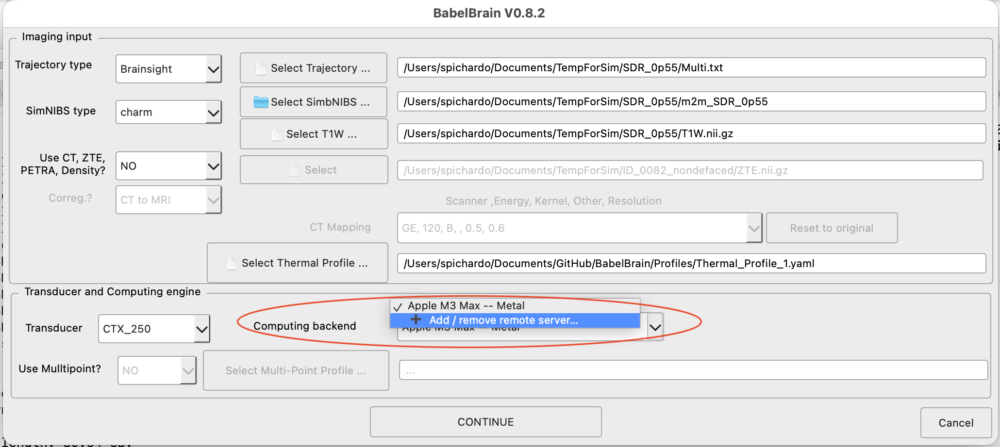
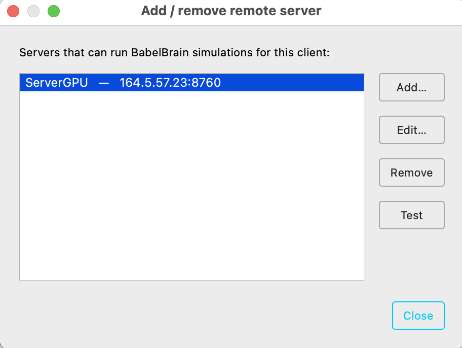
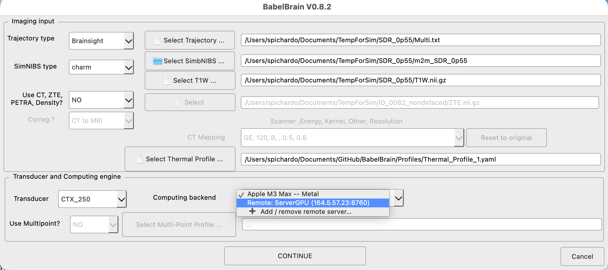

Server mode¶
BabelBrain can run as a job server: it exposes the pipeline over a small
HTTP/JSON API so language-agnostic clients (Python, C#, C++, curl, …) can
submit jobs, follow progress, and collect results over the network. It is the
same engine used by scripting, with a network front-end and a
job queue.
Important notes:
- Multiple workers — one BabelBrain process drives per GPU available in the server, so jobs are processed simultaneously as many GPU are available.
- Stateless server operation mode - while persistant mode (data permanently stored in server) is feasible, the recommended operation is to use the server as stateless, where the client sends the data needed for calculations and recovers the artifacts.
- Declarative jobs — a job specifies inputs, which steps to run, and parameter overrides (no arbitrary remote code).
- Local first — binds to
localhostby default. For any access beyond the local machine, configure a token and encrypt the traffic: see Transport security (TLS).
Starting the server¶
The server can be initiated using the binary distribution or the source code. For example
/Applications/BabelBrain.app/Contents/MacOS/BabelBrain --serve --headless # localhost:8760, no GUI shown
/Applications/BabelBrain.app/Contents/MacOS/BabelBrain --serve --headless --serve-host 164.5.34.1 # specify IP address of exposed network interface to accept requests
/Applications/BabelBrain.app/Contents/MacOS/BabelBrain --serve --headless --serve-host 164.5.34.1 --serve-port 9000 --serve-token SECRET # specify also different port number and secret TOKEN
python BabelBrain/BabelBrain.py --serve --headless # localhost:8760, no GUI shown
python BabelBrain/BabelBrain.py --serve --headless --serve-host 164.5.34.1 # specify IP address of exposed network interface to accept requests
python BabelBrain/BabelBrain.py --serve --headless --serve-host 164.5.34.1 --serve-port 9000 --serve-token SECRET # specify also different port number and secret TOKEN
Token use is HIGHLY RECOMMENDED, and often required by IT, when using in a large network
Stop the server with Ctrl-C.
Server mode options¶
| Option | Effect |
|---|---|
--serve |
Run as a job server. |
--serve-host |
Bind address (default 127.0.0.1). |
--serve-port |
Port (default 8760). |
--serve-token |
Require Authorization: Bearer <token> on every endpoint (or set BABEL_SERVER_TOKEN). |
--serve-certfile |
PEM certificate to serve over HTTPS instead of plain HTTP (or BABEL_SERVER_CERTFILE). See Transport security. |
--serve-keyfile |
PEM private key that pairs with --serve-certfile (or BABEL_SERVER_KEYFILE). |
--serve-cafile |
CA bundle used to require and verify client certificates (mutual TLS; or BABEL_SERVER_CAFILE). Advanced — most setups leave this off. |
--headless |
Run with no window (for a remote/headless GPU box). |
Safety guard. When the server binds a non-loopback address (anything other than
127.0.0.1/localhost) it will refuse to start without a token, and will warn if TLS is not enabled (the token would otherwise cross the network in cleartext). Set the environment variableBABEL_SERVER_ALLOW_INSECURE=1to override the guard — for example when a reverse proxy terminates TLS in front of BabelBrain.
Client configuration¶
In BabelBrain client operation (normal GUI mode), the uer can use a remote server in the same way as it would be a local GPU. No data will be preserved in the server. Be aware that during the execution of a session, files will be transferred back and forth between the client and server. Files will be deleted once the client closes its session or the server is stopped.
The user can configure a remote server in the list of "Computing Backends":

this will show a small dialog where the user can add a new server where IP address, port and optional secret token can be specified

Be aware that multiple server entries can be created.
Once defined, the configured servers will be available as a list of computing backend:

Server API¶
| Method & path | Purpose |
|---|---|
GET /healthz |
Liveness + {busy, queued}. The only endpoint that never needs auth. |
GET /capabilities |
Server info, incl. the list of available transducers. |
GET /defaultconfig |
BabelBrain's default advanced configuration (clean baseline). |
GET /currentconfig |
The server's current advanced configuration (which may be needed to recover some paths for tools like SimNIBS). |
POST /jobs |
Submit a JobSpec (the config field is mandatory); returns {job_id} (202). |
GET /jobs |
List all jobs (summaries). |
GET /jobs/{id} |
Job status: state, phase, percent, error, artifacts, exit_code. |
GET /jobs/{id}/events?since=N |
Progress events from index N (polling). |
GET /jobs/{id}/stream |
Same events as Server-Sent Events (push). |
POST /jobs/{id}/cancel |
Cancel a queued job, or request cancellation of the running one (honored between steps). |
Configuration is client-owned and mandatory¶
The advanced configuration is owned by the client, not
stored per-session on the server. Every job must carry its own config
object; a submission without it is rejected (400).
The usual flow is: fetch a baseline, tweak, and send the whole dictionary back:
GET /defaultconfig— BabelBrain's pristine defaults (what the immense majority of clients want: a clean, deterministic starting point).GET /currentconfig— the server's current values (e.g. a sanitized site baseline an operator configured). Read-only.
In server mode the configuration is memory-only: the server never writes
lastselection.yaml, and a job's config affects only that job. (Persisting is
allowed only for a normal, local non-server session.)
JobSpec¶
A JobSpec (POST body, JSON) has three parts: input-selection fields, the
mandatory config, and steps.
{
"t1w": "/data/sub-01/T1W.nii.gz",
"simbnibs": "/data/sub-01/m2m_sub-01/",
"trajectory": "/data/sub-01/target.txt",
"thermal_profile": "/data/profile.yaml",
"transducer": "CTX_500",
"ct_type": "CT",
"ct": "/data/sub-01/CT.nii.gz",
"output_path": "/data/sub-01/output/",
"recalculate": true,
"config": { "...": "the full advanced-config object from /defaultconfig" },
"steps": {
"planning": [
{"action": "set", "control": "USMaskkHzDropDown", "value": "500"},
{"action": "set", "control": "USPPWSpinBox", "value": 6},
{"action": "set", "control": "HUThresholdSpinBox", "value": 300},
{"action": "run"}
],
"acoustic": [
{"action": "select_trajectory", "index": 0},
{"action": "set", "control": "ZSteeringSpinBox", "value": 3.0},
{"action": "set", "control": "XSteeringSpinBox", "value": 0.0},
{"action": "run"},
{"action": "select_trajectory", "index": 1},
{"action": "run"},
{"action": "click", "control": "CombineTrajectories"}
],
"thermal": [
{"action": "select_trajectory", "index": 0},
{"action": "run"},
{"action": "click", "control": "ExportSummary", "wait": false},
{"action": "click", "control": "ExportMaps", "wait": false}
]
}
}
- Input fields (
t1w,simbnibs,transducer,ct_type, …) are thelaunch()inputs — the SelFiles-level selections. Step-1 controls (frequency, PPW, HU threshold) are not here; they areplanningactions, so the client controls them and their order. config— mandatory advanced configuration (see above).recalculate—truerecomputes;falsereloads cached results.use_last_selection— seed omitted input fields from the last GUI session.steps— an object with any ofplanning/acoustic/thermal, each an ordered list of actions. Steps run in pipeline order; actions run exactly in the order given.
Actions¶
Each action targets the controls of its step (planning → the main window,
acoustic/thermal → the current trajectory tab). Control names are the same
as in Scriptable operations.
| Action | Fields | Effect |
|---|---|---|
set |
control, value |
Set a control (spin box / check box / drop-down / USPPWSpinBox). |
select_trajectory |
index |
Select a trajectory tab (acoustic/thermal only). |
run |
(optional) timeout_ms |
Click the step's run button and wait for completion. |
click |
control, (optional) wait (default true), timeout_ms |
Click any button (e.g. CombineTrajectories, CalculateMechAdj, ExportSummary); use "wait": false for exports. |
This gives full, ordered control — e.g. select trajectory 0 → set Z-steering → run → select trajectory 1 → run → combine — mirroring what you'd do in the GUI or in a script.
Job lifecycle¶
QUEUED → RUNNING → SUCCEEDED | FAILED | CANCELLED. On SUCCEEDED, artifacts
lists the produced files (.h5, .nii.gz, .csv) under output_path; on
FAILED, error carries the traceback and exit_code is non-zero.
Client examples¶
curl (remember config is mandatory — fetch a baseline first):
curl -s localhost:8760/capabilities
curl -s localhost:8760/defaultconfig > config.json # baseline to embed in the job
# ...build a JobSpec (with "config": <config.json>) as spec.json, then:
JOB=$(curl -s -XPOST localhost:8760/jobs --data @spec.json | python -c "import sys,json;print(json.load(sys.stdin)['job_id'])")
curl -s localhost:8760/jobs/$JOB # poll status
curl -sN localhost:8760/jobs/$JOB/stream # follow progress (SSE)
A complete, dependency-free Python reference client ships with the source at
BabelBrain/client_server_remote.py- This mimics how the GUI client BabelBrain operates, where local temporary directories at the server are used to store files during the session life, the client sends input files to the server, then artifacts (results files) are recovered from the server.BabelBrain/client_server_session.py- This shows how to keep the session alive between Steps 1 to 3, which can be needed when some temporary state persistance is needed. The complete GUI client combines this session mode and the remote temporary file storage shown inclient_server_remote.py.BabelBrain/client_server_persistent.py- This shows the case where file paths refer to local locations in the server, showing how to run simulations in the case results are desired to remain in the filesystem of the server.
Transport security (TLS)¶
The server drives a GPU and reads/writes files, so treat it as an attack surface
from the outset. Plain HTTP is fine only for localhost. As soon as another
machine talks to it, the traffic — including the bearer token — should be
encrypted. There are two supported shapes, and picking the right one first
saves a lot of certificate pain:
| Situation | Recommended approach |
|---|---|
| A trusted box on the same network (Linux / Windows / macOS) that clients reach directly by IP or hostname. | Self-signed TLS certificate — Recipe A below. |
| A remote / more serious server on another network, behind a firewall, not meant to be exposed. | SSH tunnelling — no certificate at all. See Reaching a remote server over SSH. |
If you can use SSH to reach the box, prefer the tunnel: it is simpler, needs no certificate, and is more secure because BabelBrain's port is never exposed to the network at all.
Recipe A — a self-signed certificate for a trusted box on the same network¶
This is the intended setup for a GPU workstation sitting on your lab/clinic LAN that a handful of trusted clients connect to directly. You generate the certificate once on the server and copy it to each client so they can trust it.
TLS on the server always needs two files — they are a matched pair and you need both:
- a private key (
babelbrain-key.pem) — secret, stays on the server; - a certificate (
babelbrain-cert.pem) — public, copied to every client.
The one thing that must be right: the server's address (the "SAN")¶
A certificate is bound to the address(es) by which clients reach the server.
This list lives in a certificate field called the SAN (Subject Alternative
Name — nothing to do with storage networks). When a client connects to, say,
https://10.0.0.5:8760, it checks that 10.0.0.5 is listed in the certificate's
SAN. If it is not, the connection is refused with a hostname/IP mismatch error,
even if the certificate is otherwise perfectly valid.
This is the server's own address — the address a client types to reach it — not the address of the clients. List every hostname and/or IP a client might use for this server (e.g. both a DNS name and a raw IP, or several interface IPs if the box is multi-homed). The clients' own addresses never appear in the certificate.
Generate the key + certificate¶
Run this on the server, replacing the hostname/IP with how this server is
reached on your network. openssl ships with the BabelBrain conda environment,
so run it from an activated environment (works identically on Linux, macOS and
the Windows Anaconda Prompt):
openssl req -x509 -newkey rsa:2048 -nodes -days 825 \
-keyout babelbrain-key.pem -out babelbrain-cert.pem \
-subj "/CN=gpu-box" \
-addext "subjectAltName=DNS:gpu-box.mylab.local,IP:10.0.0.5"
subjectAltName=...— the critical part. Put every address clients use for this server here. UseDNS:for hostnames andIP:for raw IP addresses, comma-separated. Examples:- clients connect by IP only →
subjectAltName=IP:10.0.0.5 - clients connect by name only →
subjectAltName=DNS:gpu-box.mylab.local - some use each, or the box has two NICs →
subjectAltName=DNS:gpu-box.mylab.local,IP:10.0.0.5,IP:192.168.1.5
- clients connect by IP only →
-nodes— do not password-protect the key, so the server can start unattended.-days 825— validity in days (~2 years; many clients reject self-signed certificates valid for longer). Regenerate when it expires.- Keep the key private: on Linux/macOS run
chmod 600 babelbrain-key.pem.
Start the server with TLS¶
python BabelBrain/BabelBrain.py --serve --headless \
--serve-host 10.0.0.5 --serve-token SECRET \
--serve-certfile babelbrain-cert.pem --serve-keyfile babelbrain-key.pem
The startup banner will now read https://… and TLS. (Because the bind is
non-loopback, a token is required — see the safety guard above.)
Configure the client to trust it¶
Copy only babelbrain-cert.pem (never the key) to each client machine. In
BabelBrain's remote-server dialog:
- Host / IP — must be one of the addresses listed in the SAN (e.g.
10.0.0.5orgpu-box.mylab.local; whichever you type must be in the certificate). - Port, Token — as configured on the server.
- Tick Use HTTPS (TLS) and set CA file to the copied
babelbrain-cert.pem.
For the Python reference clients, point them at the copied certificate:
import client_functions as cf
cf.BASE = "https://10.0.0.5:8760" # must match a SAN entry
cf.TOKEN = "SECRET"
cf.CA = "babelbrain-cert.pem" # trust our self-signed cert
Last resort only: ticking Skip certificate verification on the client (or
cf.INSECURE = True) disables all verification. It removes the protection TLS is meant to provide and invites a man-in-the-middle — use it only for a throwaway local test, never in routine operation.
Reaching a remote server over SSH¶
For a server on a separate/remote network that is not (and should not be) exposed, do not generate a certificate. Leave BabelBrain on its default loopback bind and reach it through an SSH tunnel — SSH already provides the encryption, server authentication and user authentication that TLS would, so adding TLS inside the tunnel is redundant.
On the server — bind to loopback (the default), no certificate, nothing exposed:
On the client — forward a local port to the server's loopback over SSH:
Now configure a remote server in BabelBrain with Host 127.0.0.1, Port
8760, HTTPS off. The client talks to http://127.0.0.1:8760 locally and
SSH carries it, encrypted, to the server. There is no certificate to manage and
no SAN to get wrong (a tunnelled cert would have to be issued for localhost,
which is more awkward, not less). Add --serve-token if you want jobs gated
beyond "has an SSH account" — it travels safely inside the tunnel.
Reverse proxy (public-facing servers)¶
For a genuinely public server with a DNS name, the lowest-maintenance option is a
TLS-terminating reverse proxy (e.g. Caddy, which obtains and renews a
real Let's Encrypt certificate automatically) with BabelBrain bound to
127.0.0.1. Clients then need no certificate configuration at all. Set
BABEL_SERVER_ALLOW_INSECURE=1 so the loopback-bound BabelBrain does not warn
about serving plain HTTP behind the proxy. This is outside the scope of the
recipes above but is the recommended shape if you must expose the service to the
open internet.